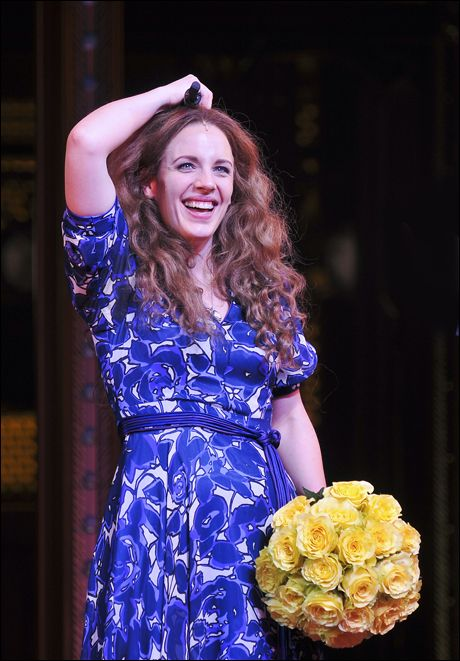
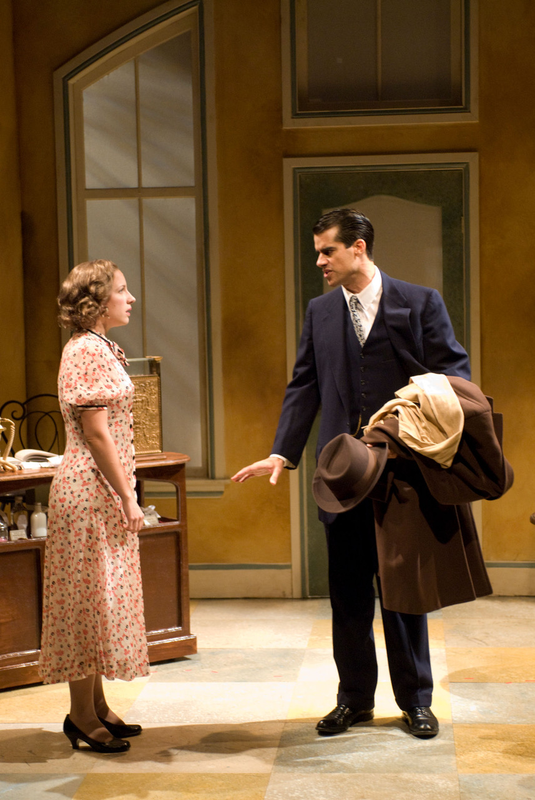

On April 18, the Tony Award–winning Evanston native presents a one-night concert at the Prairie Center for the Arts in Schaumburg. A fundraiser for Season of Concern — the Chicagoland theatre community’s charity providing emergency funds for artists facing health, housing, and other crises — guests who purchase VIP tickets will enjoy a post-concert champagne and dessert reception with the star.
“We are overjoyed to welcome Jessie Mueller for this exciting event,” said Eddie Sugarman, Assistant Director at the Prairie Center. “It’s not only a thrilling way to close our season but also a meaningful opportunity to uplift the artists who make Chicago’s theater community so vibrant.”
At Evanston Township High School, Mueller took on musical and dramatic roles that cemented her love for the stage. After graduating in 2001, she studied musical theatre at Syracuse University. Rather than heading straight to New York like many inungénues, Mueller made the deliberate and defining choice to return home to Chicago. Deeply connected to the city and its theatre community — with parents and siblings also professional artists — she set out to build a sustainable career as a working actor, honing her craft on the region’s most respected stages.
Mueller earned her Equity card with Chicago Shakespeare Theater, where she developed a strong classical foundation. In 2006, she toured England with the company, performing Lady Mortimer in Henry IV at the Royal Shakespeare Company’s Swan Theatre in Stratford-upon-Avon. Over the next several years, Mueller became a familiar and admired presence across Chicago-area theatre, and in 2011 the Chicago Tribune named her Actor of the Year. She received the Joseph Jefferson Award for Best Lead Actress in a Musical for her portrayal of Amalia Balash in She Loves Me.

That same year marked a turning point: she made her Broadway debut as Melinda Wells in the revival of On a Clear Day You Can See Forever, earning Tony and Drama Desk Award nominations. Mueller’s Broadway career quickly flourished, with appearances in Nice Work If You Can Get It and The Mystery of Edwin Drood before achieving career-defining success as Carole King in Beautiful: The Carole King Musical. Her performance earned her the Tony Award for Best Actress in a Musical, the Drama Desk Award, and a Grammy Award.
She originated the role of Jenna Hunterson in Waitress, receiving additional Tony and Drama Desk nominations, and later earned another Tony nomination for her portrayal of Julie Jordan in the 2018 revival of Carousel. She also made her Broadway non-musical debut in Tracy Letts’s The Minutes.
Mueller made her feature-film debut in Steven Spielberg’s The Post as Chicago advice columnist Judith Martin, and appeared in the superhero comedy Secret Headquarters. Mueller has remained closely tied to Chicago, returning for concerts, benefits, and special performances, including appearances with Lyric Opera of Chicago, where she was nominated for a Chicago/Midwest Emmy Award for her performance in the Chicago Voices concert.
It was an honor to speak with Mueller recently by phone as her toddler joyfully played in the background. Mueller noted that this was her best role yet.
Classic Chicago: What were your musical experiences like growing up in Evanston?
Jessie Mueller: I grew up seeing a lot of theatre with my family. My parents are actors and we saw a lot of shows at the Marriott, Drury Lane, Northlight, the Goodman, and lots of other local theatres. I was really fortunate to be exposed to theatre and the arts at a really young age! At home we listened to a lot of James Taylor, Paul Simon, Whitney Houston. My dad had a penchant for classic folk rock, like Crosby, Stills, Nash & Young and Gordon Lightfoot. And I can’t forget Disney! I think Alan Menken is probably responsible for a good chunk of my early musical memories.
Classic Chicago: What do you remember were the most encouraging words you received?
Jessie Mueller: I don’t remember any specific words, per se. But my high school drama teacher, Aaron Carney, was a huge positive influence on me. That and my first singing teacher, Michael Querio. They were both so encouraging of my individual talents. They made me feel like I had something special to develop and share.
Classic Chicago: What words would you give to a young Evanston student who might dream of doing the very same thing that you have done?
Jessie Mueller: Focus on the work, not the hype around it. Surround yourself with good, loving people. And lean on them! You’ll need them.
Classic Chicago: What is your dream role to play?
Jessie Mueller: Maybe someday a Mama Rose? Auntie Mame? Mrs. Lovett?
Classic Chicago: You return to our Chicago-area theaters for many performances as well as appearances on Broadway. Are there a couple that stand out in terms of roles you played that were especially wonderful for you?
Jessie Mueller: I think, honestly, each role is special because of its time and place. It’s like this little time capsule of who I was at that moment — what I was learning, struggling with, focusing on. I’m not great with timelines, so for a good chunk of my life I would remember what happened because of what show I was doing at the time. But I have to say my years in Chicago with my friends there were extremely special. I just remember having so much fun. The comradery of it all. There was nothing like it.
Classic Chicago: Tell us about working with Tracy Letts — what an incomparable experience!
Jessie Mueller: I’ll be honest, I was intimidated by Tracy! Still am, a little. But he’s honestly such a lovely human. He’s just very smart and very tall. And he knows lots of words that I don’t. All kidding aside, I had a ball on that show. As strange and dark as it was, it was a hugely positive bonding experience for our casts. We started before the pandemic and ended on a reboot after. It was a wild time. We had to lean on each other, trust each other through a very scary period. I think we were all really grateful to have something important like that to sink our teeth into at the time. And the world has just gotten crazier. It’s like the play gets more and more meaningful as time goes on. He was strangely prescient about it all, sadly.
Classic Chicago: When you won the Tony, what was your first reaction? What was it like to capture Carole King?
Jessie Mueller: Honestly, the first thing I remember thinking was “don’t trip on your dress” and “talk fast, this has been a long evening!” Then I remember trying to find Carole in the crowd. It was a wonderful moment. I was so proud of our show and so grateful to her for trusting us.
Classic Chicago: What a variety of roles you have played — from Shakespeare here to many revivals to first-run plays. Why is it important to have this variety?
Jessie Mueller: It challenges me. I learn something from every role. And I’m always attracted to different roles depending on where I am in my life — what I feel like I can bring to a certain story, how I can find the authenticity. I’ve had people ask me if I could go back and play a part again, which would it be? And I’m not sure I could do that! They’re so of a place and time.
Classic Chicago: What was the hardest role you have ever played and why?
Jessie Mueller: Mom! But it’s also the best! And I am learning it and relearning it every day.
Classic Chicago: You are a parent of a little one — do you sing to your toddler and what is a favorite song you sing?
Jessie Mueller: Always. I sometimes think he’s like, “Mama, give it a rest…” I sing a lot of different things to him. A favorite lullaby is “Stay Awake” from Mary Poppins. The Sherman Brothers are always a hit in our house. He loves older music — jazz and the soundtrack to Paper Moon, which is all tunes from the 1920s. I don’t think this is his first rodeo. Kid’s got an old soul.
Tickets for “An Evening with Broadway Star Jessie Mueller” on Saturday, April 18 at 7:30 p.m. start at $50 and are available through the Prairie Center Box Office at 847-895-3600 or online at prairiecenter.org. Tickets are selling quickly. A limited number of VIP tickets are available for a $50 donation to Season of Concern — in addition to the concert ticket price — for a post-concert champagne reception with the star.